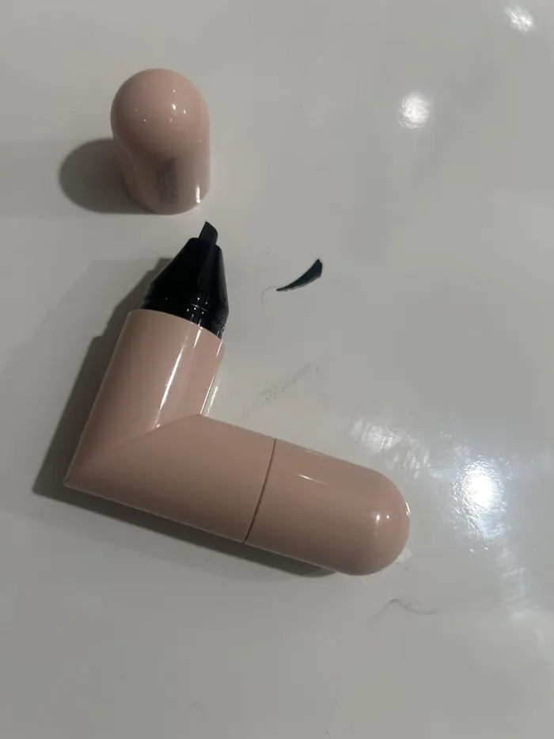
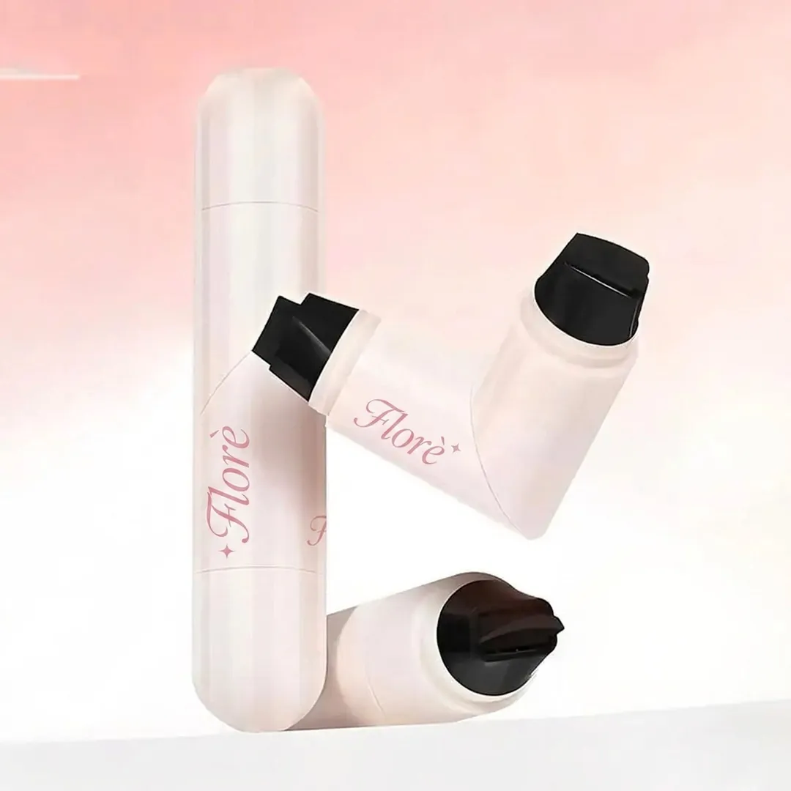
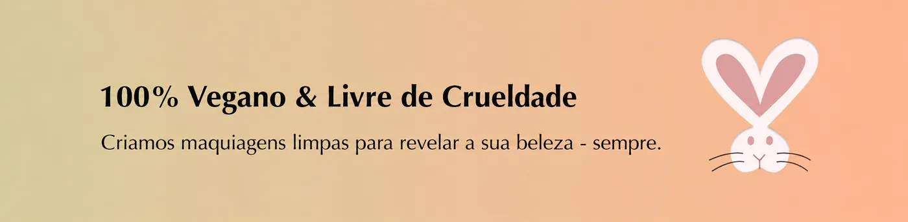
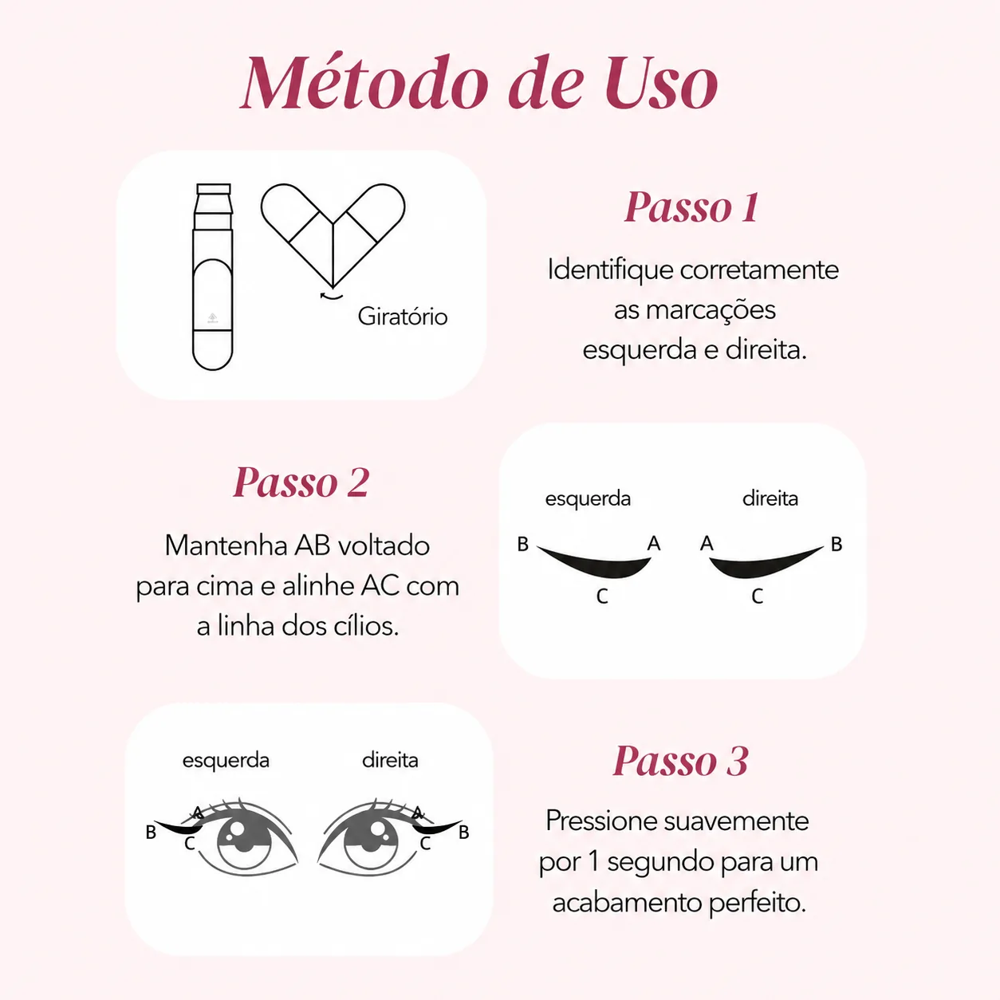
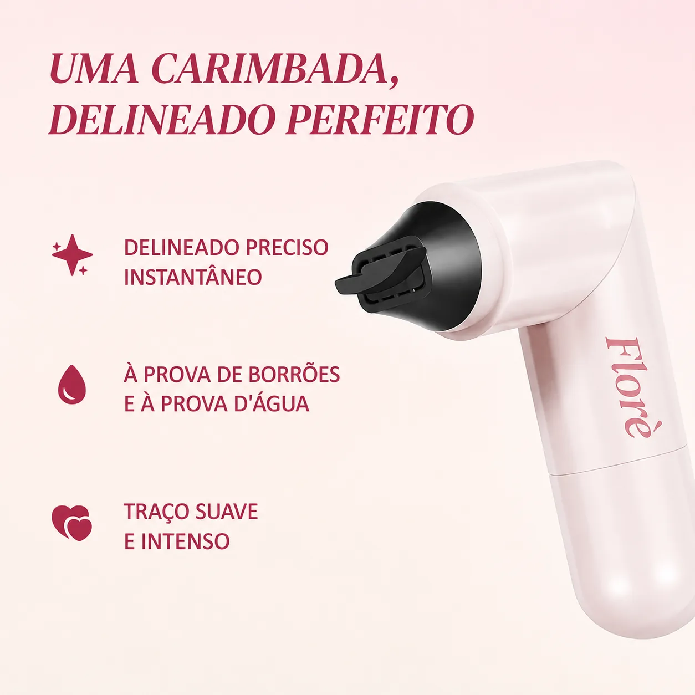
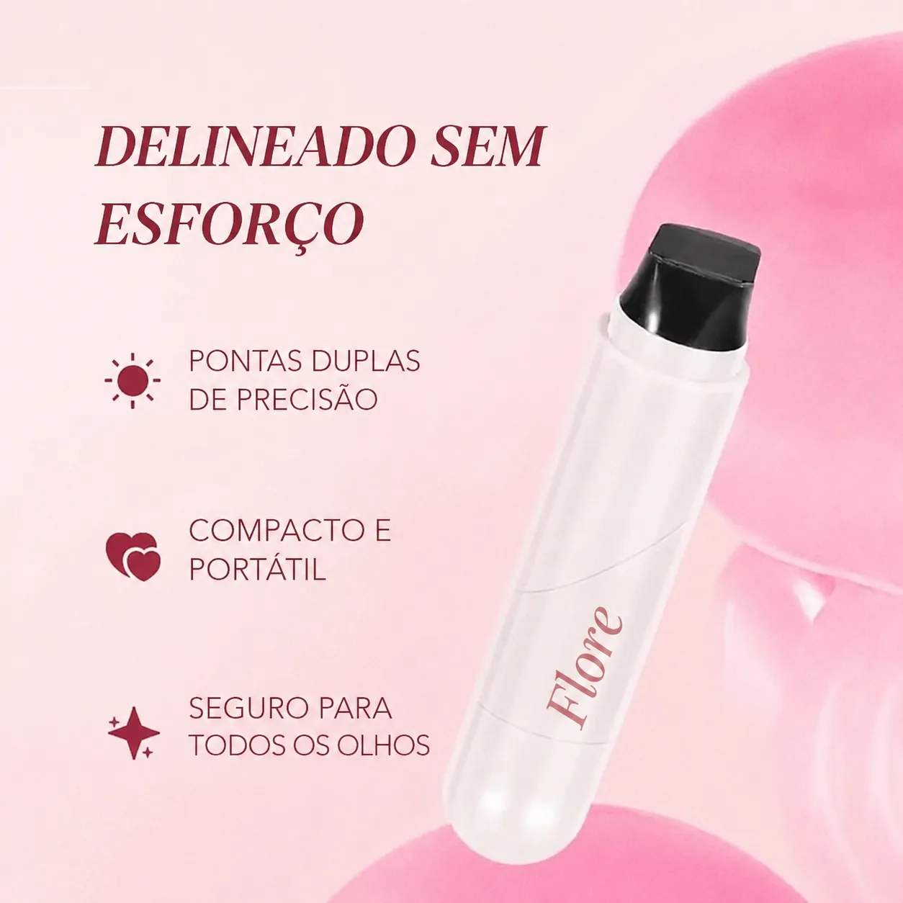

Sai fácil demais. Mas fica lindo!
Facilita demais, o único problema é que sai com certa facilidade. Bom para tirar fotos ou gravar víd[…]

☀️ Edição de verão — 50% OFF em favoritos selecionados

Coleção Olhar Marcante
ou 3x de R$ 10,72 sem juros
Cor · Preto
Gatinhos impecáveis em segundos — sem estresse e sem retrabalho. O Carimbo Gatinho Perfeito garante aquele traço marcado e levantado todas as vezes. Um carimbo, um traço e você já pode sair.
Todo mundo já passou por isso — um lado perfeito e o outro… nem tanto. Foi por isso que criamos este produto. Com um carimbo perfeitamente angulado de um lado e um delineador de precisão do outro, o Gatinho Perfeito entrega traços limpos e iguais em segundos.
O pigmento preto intenso e à prova d'água desliza com suavidade e não sai com umidade, calor ou dias longos. Suave para olhos sensíveis, mas resistente até a hora de remover.
Um carimbo, um traço — e sua rotina de delineador ficou muito mais fácil.

1. Alinhe o carimbo com o canto externo do olho. 2. Pressione suavemente para marcar o gatinho. 3. Use a ponta delineadora para unir o gatinho à linha dos cílios. 4. Aguarde alguns segundos antes de piscar.
Mantenha o olho aberto ao carimbar para um ângulo mais levantado. Use a ponta delineadora para afinar ou engrossar o traço como preferir. Guarde com a ponta para baixo para a tinta fluir bem. Ajuste as bordas com um cotonete para um acabamento ainda mais marcado.
Extrato de Aloe Vera para acalmar e hidratar a delicada área dos olhos. Pantenol (Vitamina B5) para condicionar os cílios. Óxidos de Ferro para um pigmento intenso e duradouro. Glicerina para manter a fórmula macia e flexível. Sempre formulado sem parabenos, sulfatos, ftalatos, óleo mineral ou testes em animais.
Avaliações de clientes
126 avaliações
Exibindo 1 – 6 de 125 avaliações
Facilita demais, o único problema é que sai com certa facilidade. Bom para tirar fotos ou gravar víd[…]

Sou PÉSSIMA em fazer gatinho — sempre torto! Com esse carimbo? 3 segundos e os dois lados ficam iguais. Usei no trabalho[…]
AMOOOOO demais!!! Já testei vários outros carimbos e eles são grossos demais, curtos demais, longos demais, não fic[…]
O carimbo deixa o gatinho rápido e sem esforço. Item obrigatório para quem está começando na maquiagem!
Genial, excelente produto para quem não tem firmeza na mão para delinear os olhos.
Amo este produto.



Frete grátis
Em compras acima de R$ 99
Troca fácil
Em até 30 dias
Checkout seguro
Criptografia SSL
Vegana e limpa
Sempre livre de crueldade
Feita com carinho
Para olhos sensíveis
Perguntas frequentes
A Florè usa ingredientes minerais limpos e seguros para todos os tipos de pele, inclusive as sensíveis. Nossos produtos são veganos, livres de crueldade e formulados sem substâncias nocivas, garantindo soluções de beleza naturais e eficazes que realçam o seu brilho.
Pedidos acima de R$ 99 têm frete grátis. Após a confirmação, o pedido é processado em até 1 dia útil e entregue em até 7 dias úteis, dependendo da região. Cuidamos para que tudo chegue rápido e em perfeitas condições.
Oferecemos 30 dias para devolução de itens lacrados e não utilizados. Se você não estiver satisfeita com a compra, solicite a devolução dentro desse prazo para reembolso integral ou troca.
No momento não oferecemos embalagem para presente, mas nossas embalagens são lindas e deixam os produtos perfeitos para presentear.
Sim! Clientes de primeira viagem têm desconto exclusivo na primeira compra. Assine nossa newsletter para receber promoções e ofertas especiais.
Com certeza! Priorizamos sua privacidade e segurança com criptografia SSL para proteger seus dados durante as transações.
Nosso time de atendimento está disponível para tirar dúvidas sobre o pedido, ajudar no uso do produto e orientar todo o processo de troca ou devolução, se necessário.
Carimbo de Delineador Gatinho Perfeito
R$ 29,90 R$ 59,90
Obrigada! Sua avaliação foi enviada.